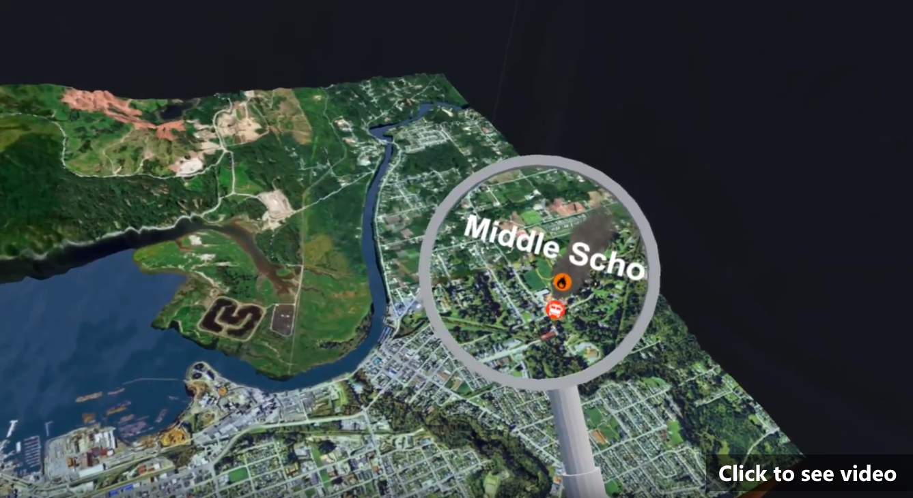
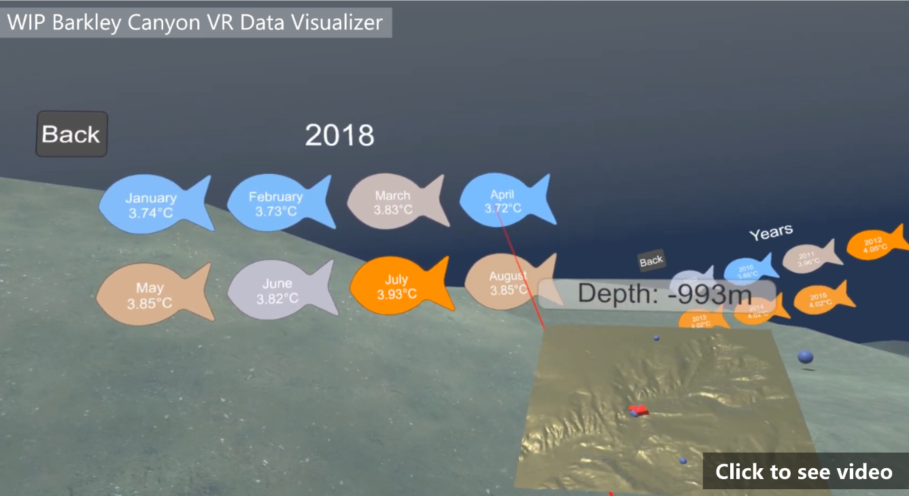
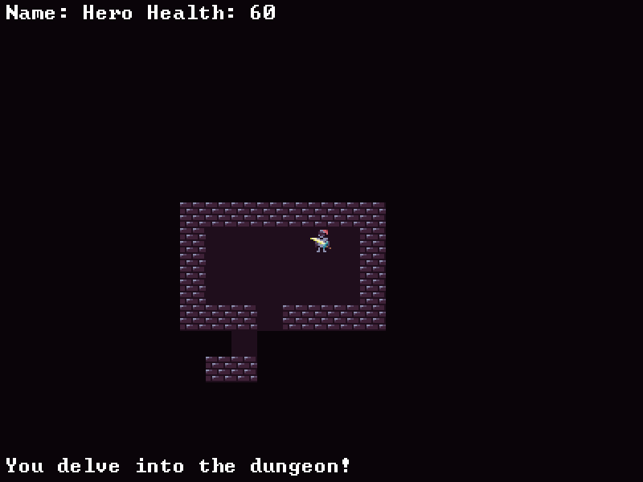

I've completed a few personal projects through Ludum Dare, which is a themed 48-hour game jam, but the last time I entered in one was almost 8 years ago, so I'm not sure the results are entirely relavent. That being said, I've still toyed with recreating game mechanics in my spare time through Unity. Recently however, I've been comitted to a single project in C++.
|  | VR Tsunami (2018)Victoria Makerspace + Ocean Networks Canada projectThis project was created while I worked with Victoria Makerspace in collaboration with Ocean Networks Canada, whose data we were showing off. In it the player is guided through a series of events leading from an initial earthquake, through an evacuation phase, and finally to a tsunami hitting the city of Port Alberni. The game is made in Unity with SteamVR, although I also worked on an Android port to the Google Daydream platform. The tsunami is created from simulations by ONC, based of a 1600s tsunami that hit the city. Everything seen in the video did not exist when I started working on the project, so I had a fair amount of influence over how certain aspects developed. For most of my time at Makerspace I was the core developer on the project, which was certainly a learning experience. We got to demo this project at several events, resulting in some media coverage, linked in the videos section of this site. |
|  | Barkley Canyon Data Visualizer (2018)Victoria Makerspace + Ocean Networks Canada projectThis is another project I worked on at Victoria Makerspace in collaboration with Ocean Networks Canada. The program shows a slice of Barkley Canyon, and several temperature logs from ONC data points. Temperatures are pulled from their Data Search and read into Unity, where they are placed at the appropriate lat/lon coordinates and with daily/monthly/yearly averages calculated. Not shown in the video is a in-development way to show elevation changes from before an earthquake to after, using simulation files. |
|  | Roguelike Project (2019-current)Personal C++ project - GitHub repository
The current project that I'm working on. I've really only worked on games in pre-existing engines like GameMaker and Unity, so it's quite different to start from scratch. The only pre-existing library I'm using is SDL, which lets me render sprites to a window. A roguelike (essentially a randomly generated dungeon crawler) is something I've been interested in making for the last year or two, so I figured I'd wrap it into learning C++. The features of a roguelike are pretty well defined, with plenty of online resources, so It almost ends up as one very elaborate coding problem. I have the project on GitHub as well, right here.
|